A smart watch store that started as a Figma design and became a working storefront, with a cart, a wishlist, live search and a quick view. Plain HTML, CSS and JavaScript.
Role
Designer and developer (solo)
Type
Figma design built as a real website
Tools
Figma, HTML, CSS, JavaScript
Focus
E-commerce UX, accessibility, performance
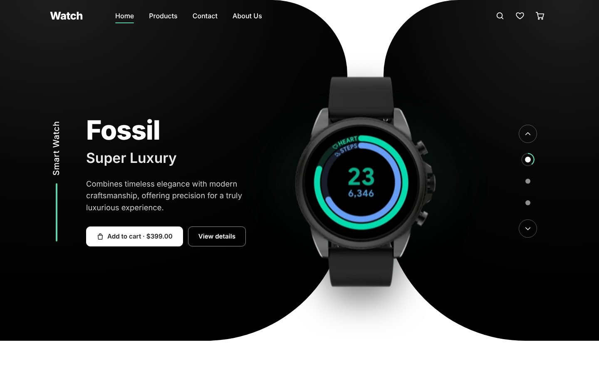
01
The plan
I designed a smart watch store in Figma, and I wanted to find out what happens to a design when it has to work. Does the carousel still feel good when it moves? Does the cart make sense when the numbers change? A design only answers those questions once it is built.
So the plan had two parts: finish the design properly, with wireframes, a UI kit and high-fidelity screens for desktop and phone, and then build every screen as a real storefront.
Keep the minimal, premium look of the design, with a dark hero and clean product cards.
Make shopping feel complete: add to cart, wishlist, search, quick view and a free-shipping nudge.
Make it accessible and fast, with large tap targets and light images.
Keep the code simple enough to edit: products live in one file.
1. WireframeSketch desktop and phone structure
2. UI kitFix colours, type, buttons and cards
3. DesignHigh-fidelity desktop and phone screens
4. BuildPlain HTML, CSS and JavaScript from the frames
5. ReviewFix copy mistakes and edge cases found while building
6. TestKeyboard use, phone widths and reduced motion
02
The idea
A watch is a small, precise object, so the store should feel precise too. The design leads with one big watch on a black hero, then lets quiet white cards do the selling.
A hero you can steer
A carousel with a progress ring, arrows, keyboard control and swiping, that pauses when you hover or focus it.
Quick view instead of page hopping
Tap any product to see details, pick a band colour and add it to the cart without leaving the page.
A cart that guides
The drawer shows a free-shipping progress bar, so the next best action is always visible.
A wishlist
Heart any watch, see a badge in the header, and filter the products page by your saved watches.
Search from anywhere
Press / on any page to search the whole catalogue, with instant suggestions.
Smart Watch Studio
An interactive collage of watches: hover one to focus it and see its name and price, click to open it.
03
Low fidelity
I started in grayscale. With no colour, photos or type to lean on, a wireframe can only answer structural questions: what comes first, how much each section needs, and where a visitor can act.
On desktop the hero comes first, then a feature pair, an offers row, the studio, the new generation showcase, accessories and a footer. On a phone the same sections stack into one column, and the card rows become swipeable.
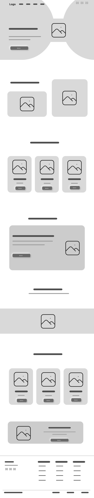
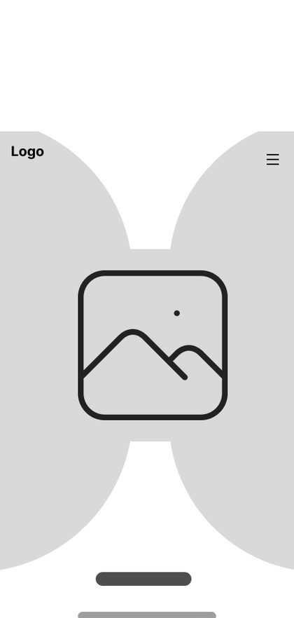
04
Low to high fidelity
Before the high-fidelity screens I made a UI kit: colours, type sizes, buttons, product cards and icons. That meant every screen afterwards was assembled from the same parts. One mint accent marks anything active, so the black and white design stays calm.
Drag the slider to compare the wireframe with the finished design. The structure barely changed, which was the point: the wireframe made the structural decisions, and fidelity only added polish.
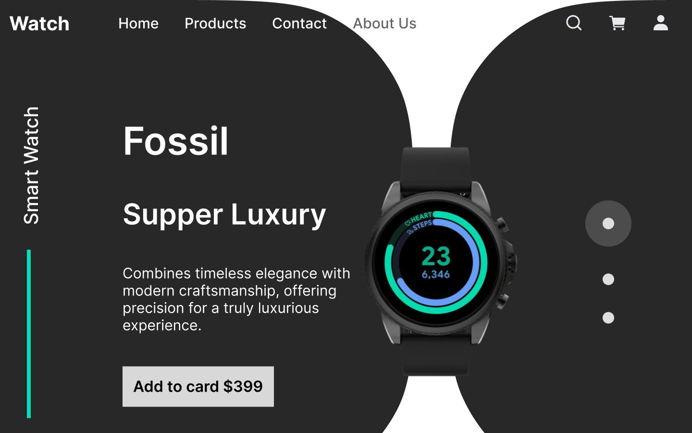
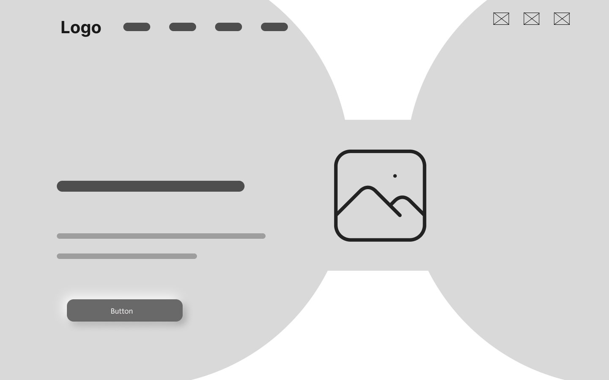
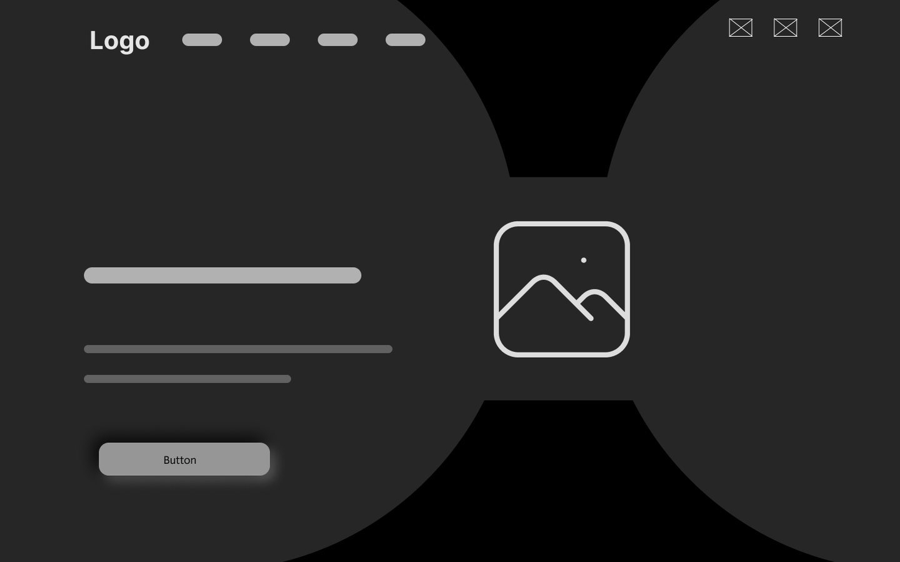
WireframeFinal design
Drag the handle, or use the arrow keys.
UI kit
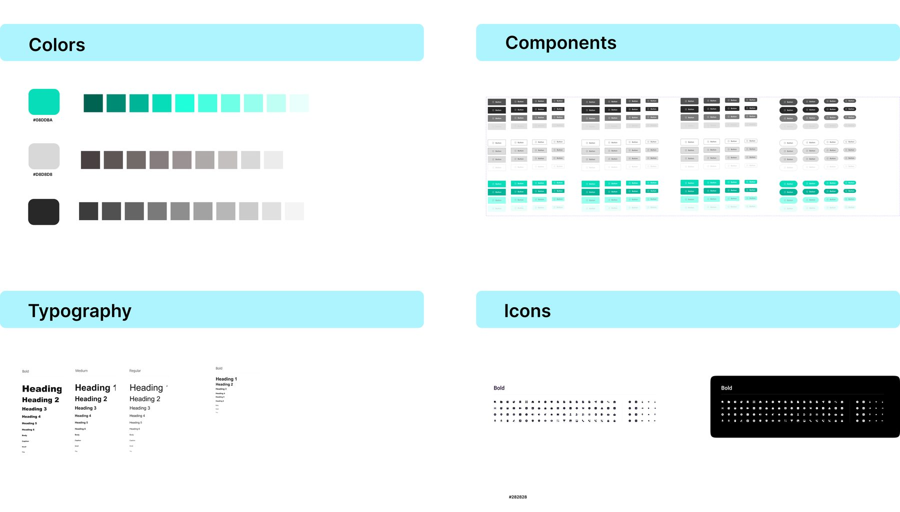
High-fidelity screens
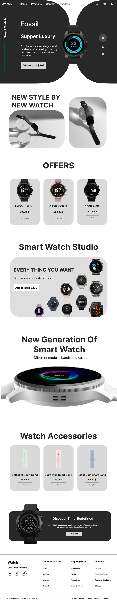
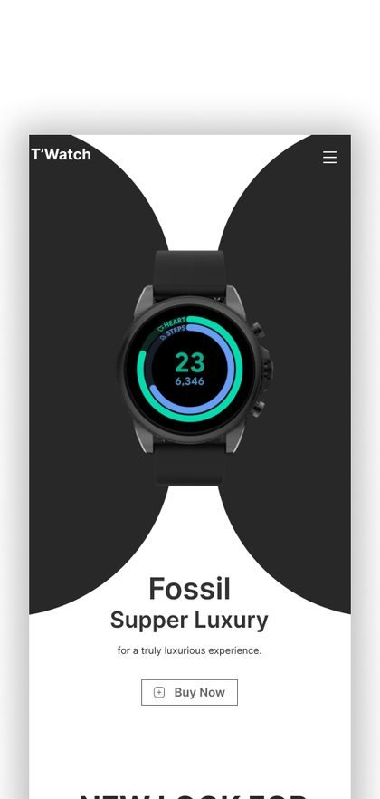
05
Building it
The store is four pages of plain HTML, CSS and JavaScript, with no build step. To add or edit a product you change one file, and every page updates.
Product data in one place
Products, hero slides, studio layout and stores live in a single JavaScript file, and every page reads from it.
Cart and wishlist that remember
Both are saved in localStorage, so they survive a refresh. The add-to-cart button confirms with “Added ✓”.
Filters you can share
Category, search and sort on the products page are kept in the address, so any filtered view can be sent as a link.
Live open or closed
Each store shows whether it is open right now, with directions and tap-to-call.
Accessible by default
A skip link, visible focus, ARIA labels and live regions, Escape closes overlays, all tap targets are at least 44 pixels, and reduced motion is respected.
Light images
Every image is converted to WebP, trimmed and lazy-loaded, about 420 KB in total.
Bugs found and fixed
Building from the design exposed copy mistakes that I fixed: “Add to card” became “Add to cart”, “Supper” became “Super”, and “Servises” became “Services”.
The finished store
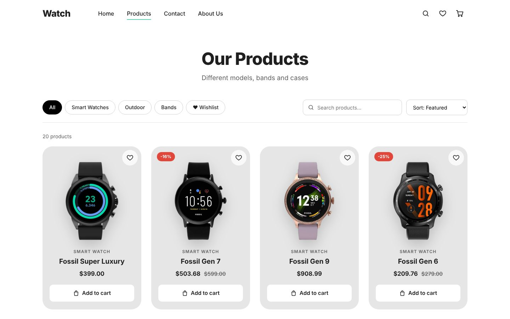
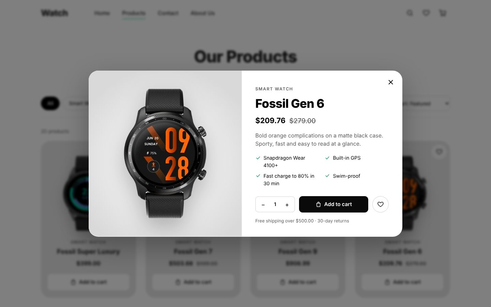
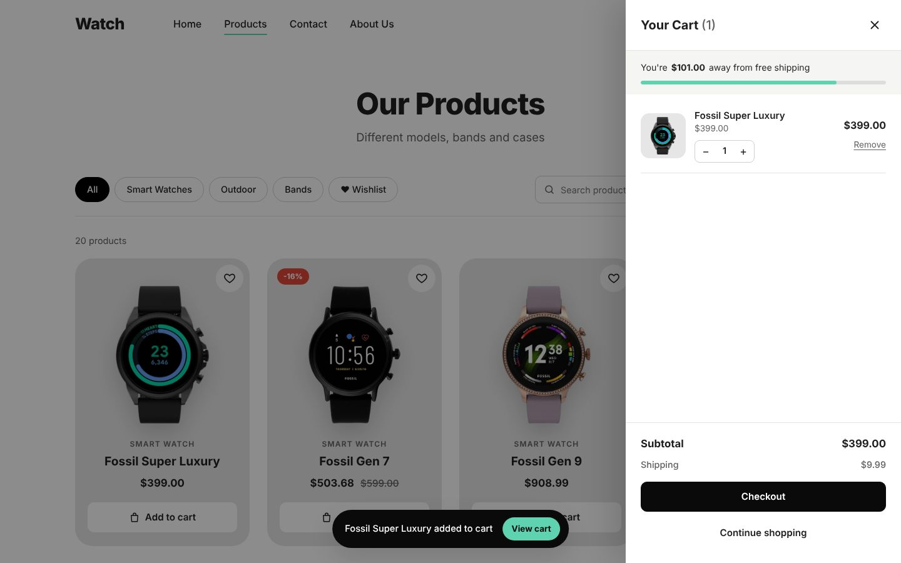
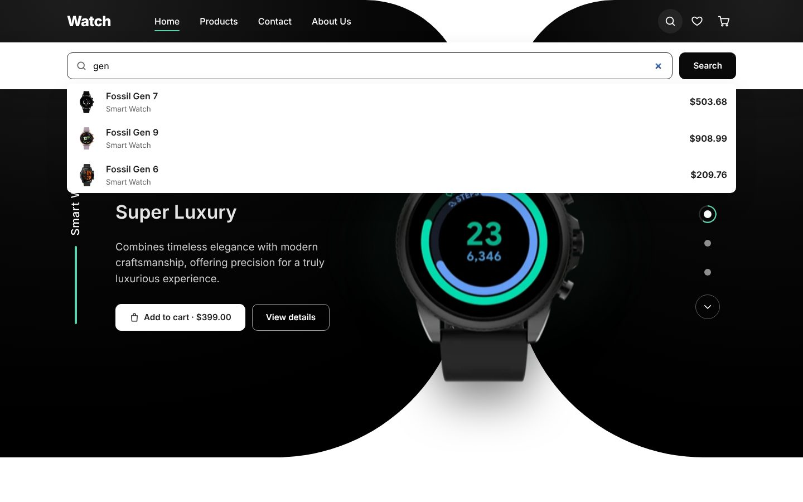
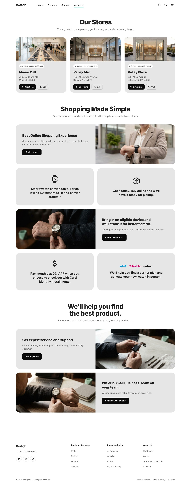
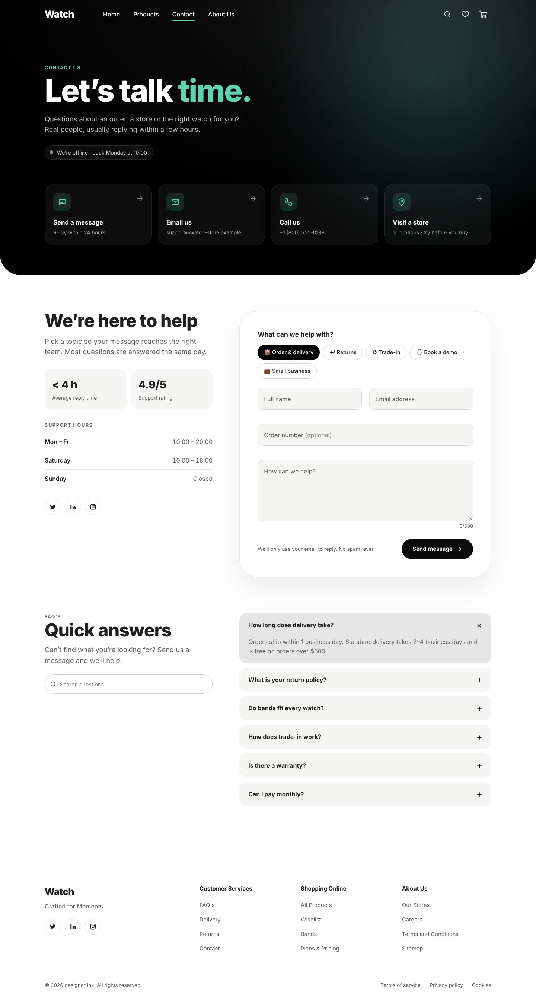
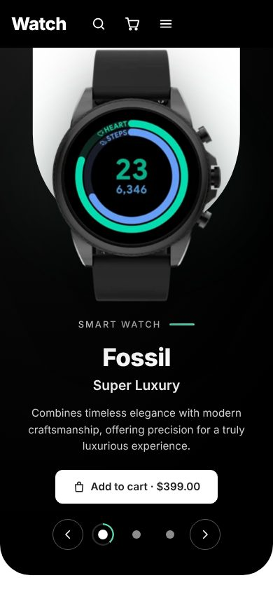
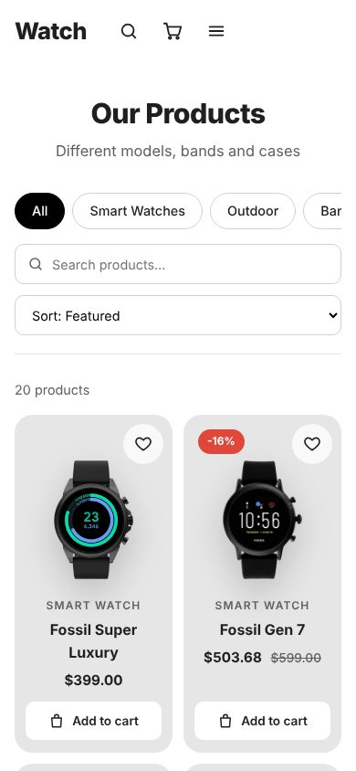
06
The prototype
The working store is the prototype. Launch it below, add a watch to the cart, open a quick view, heart a few products, press / to search, and resize the window or open it on your phone.
The Watch Store went from a Figma file to a store that works on every screen size. It is the clearest example in my portfolio of taking a design all the way to code.
4Pages
20Products with filters and sorting
3Stores with live open or closed status
0Frameworks or libraries
Building the design exposed small problems that a static frame hides, like typos in the copy and the need for a clear added-to-cart state.
A UI kit made the build faster, because every card and button was already decided.
Putting all product data in one file means a new product is one edit, not four.
Next: photos for the About page from the Figma frames, and a real checkout.